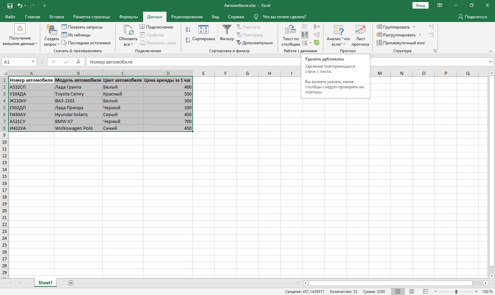
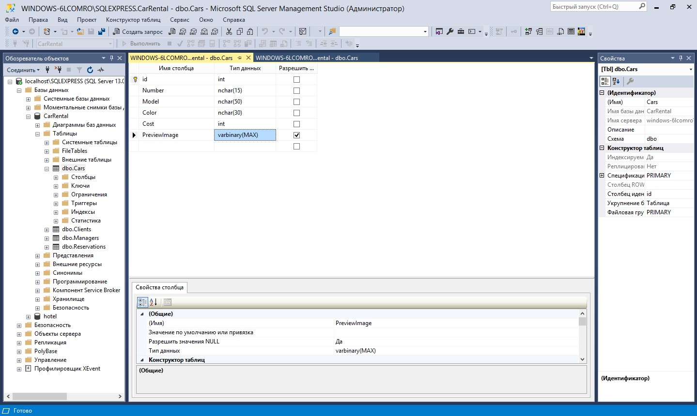

Часто информация хранится в неструктурированном виде, т. е. не имеет заранее определенной структуры данных, либо не организована в установленном порядке. Такие данные, как правило, представлены в форме текста или больших неупорядоченных таблиц. Это приводит к трудностям анализа, особенно в случае использования традиционных программ, предназначенных для работы со структурированными данными.
Помимо ручного добавления данных в базу может возникнуть необходимость обработки данных и импорта. Для импорта могут быть представлены файлы и данные в разном формате. Например, сейчас у нас есть:
Список менеджеров в формате csv
Список автомобилей в формате xlsx
Список фотографий автомобилей в виде изображений
В этом уроке мы протестируем несколько разных способов импорта данных, предварительно очистив базу данных.
Работа с текстовыми данными
Импорт списка менеджеров
Переходим к списку менеджеров и воспользуемся мастером импорта и экспорта.
1. Кликаем по названию базы данных Задачи — Импорт данных
2. В качестве источника данных выбираем неструктурированный файл
3. Тип: CSV-файлы
4. На вкладке "Предварительный просмотр" мы можем увидеть, как они будут представлены
5. Убираем галочку на параметре "Имена столбцов в первой строке даных", указывающем, что первая строка — это заголовок
6. Далее выбираем, куда мы хотим импортировать данные — нашу базу
7. После чего выбираем таблицу, где данные будут размещены
8. Далее — Далее — Финиш. 5 строк было импортировано. Можем их увидеть в таблице
Импорт списка автомобилей
1. Приступаем к импорту автомобилей

2. В таблицах могут встречаться дубликаты, поэтому желательно проверять этот момент и удалять их. Выделяем все данные — Данные — Удалить дубликаты. Но в нашем случае их нет.

3. Изменяем порядок столбцов таким образом, чтобы они соответствовали порядку в таблице базы данных.
4. Вставляем в таблицу Cars
Импорт таблицы Cars через Visual Studio
Так как структура данных сложная: список полей, папки с картинками, которые также должны храниться в базе данных, предлагаем выполнить импорт с помощью кода С# в Visual Studio
1. Воспользуемся существующим проектом, и в MainWindow создаем метод для импорта автомобилей. Можем сразу вызвать его при запуске
2. Прежде чем работать в коде с файлом автомобилей, сохраняем его как "Текст Юникод" и удаляем в итоговом файле первую строку с заголовком. Файл — Сохранить как — "Текст Юникод".
3. Удаляем строку с заголовками
4. Создаем две переменные
5. Пробежимся по строкам в файле, разделив данные с помощью табов, и создаем экземпляр класса, заполнив свойства соответствующими значениями, и не забывая про типы данных
6. Записываем изображения в базу данных с помощью метода ReadAllBytes()
7. Если вы забыли добавить поле для картинки, то необходимо сначала добавить его в базе данных, а затем пересоздать ADO.NET модель

8 Добавляем тур в базу и сохраняем
9. Вызываем метод в конструкторе MainWindow и проверяем результат в базе данных. Список автомобилей с картинками импортирован.
Итоги
Мы рассмотрели некоторые полезные функции для обработки неструктурированных данных, а также различные способы импорта в базу данных.